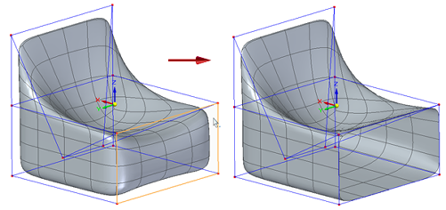
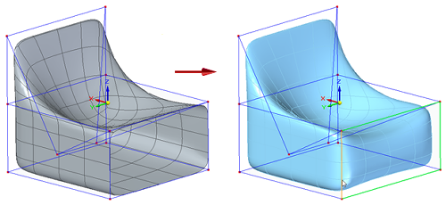

Delete and fill cage faces
In the Subdivision Modeling environment, you can select the Fill command to replace faces that were previously deleted using the Delete command on the shortcut menu.
Using the Delete and Fill commands
The Delete command and the Fill command work together to remove or to add faces to existing subdivision cages.
After the front cage face of this shape was deleted,

The Fill command was selected to replace the cage face.

If faces are removed, the subdivision cage is open, and the body becomes a surface body. Changes to body topology are tracked in PathFinder. Subdivision surface bodies are listed under the Construction Bodies collector.
Fill command workflow
-
In the Subdivision Modeling environment, select the Home tab→Modify group→ Fill command .
-
Select cage edges. Three or more cage edges are required to create a face.
-
Click Accept on the command bar to finish, and then right-click to end the command.
How do I
Subdivision Modeling workflowMove cage elements
Move using Quick Move
Use symmetric mode in Subdivision Modeling
Scale a subdivision model
Split subdivision model faces
Split faces with offset
Offset cage faces
Connect cage faces or edges with a bridge
Align a shape to a curve
Learn more
Introduction to Subdivision ModelingUsing PathFinder with subdivision models
Working with cage elements
Creating subdivision features
Working with subdivision features
Moving and rotating cage elements
Look up more details
Subdivision Modeling commandBox command in Subdivision Modeling
Box command bar
Cylinder command in Subdivision Modeling
Cylinder command bar
Sphere command in Subdivision Modeling
Sphere command bar
Torus command
Torus command bar
Scale command in Subdivision Modeling
Blend command
Show Blend Values command
Split command
Split with Offset command
Bridge command
Align to Curve command
Cage Style command